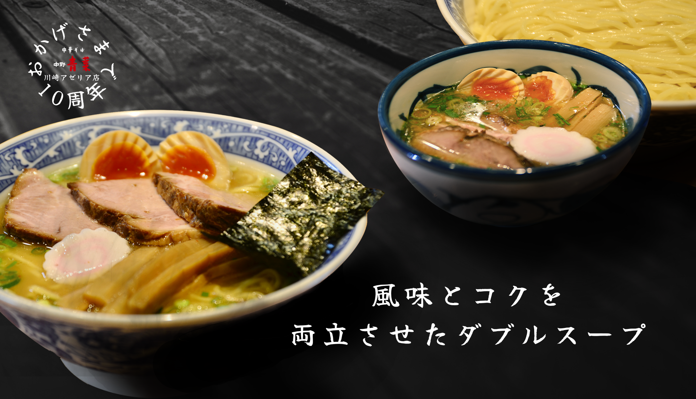
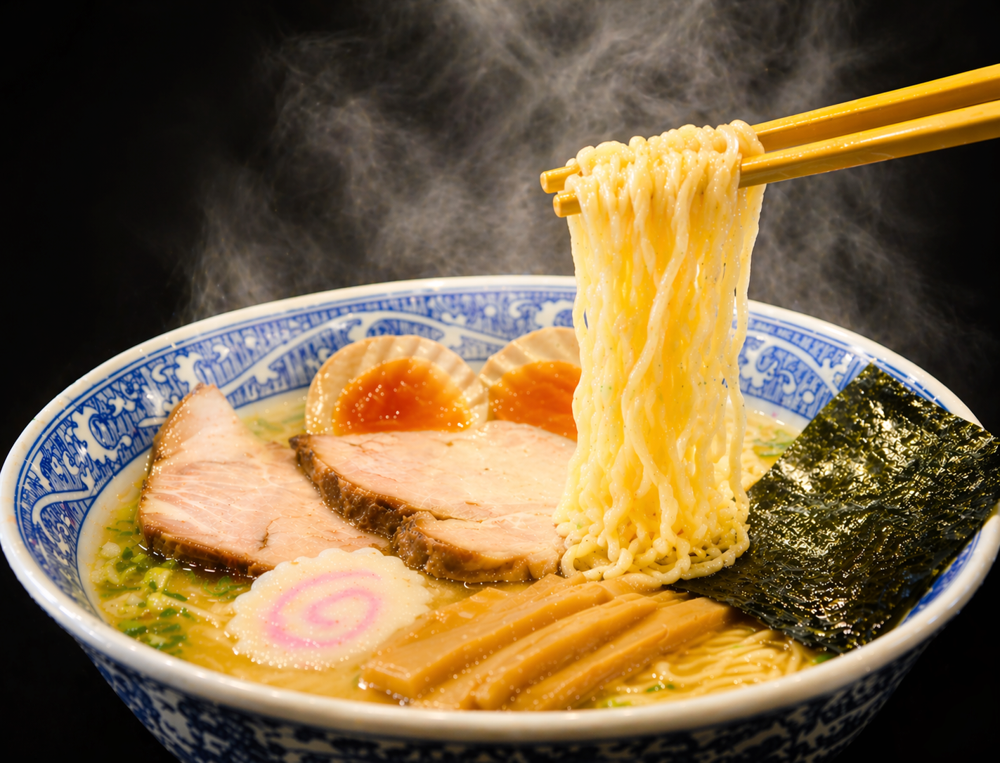
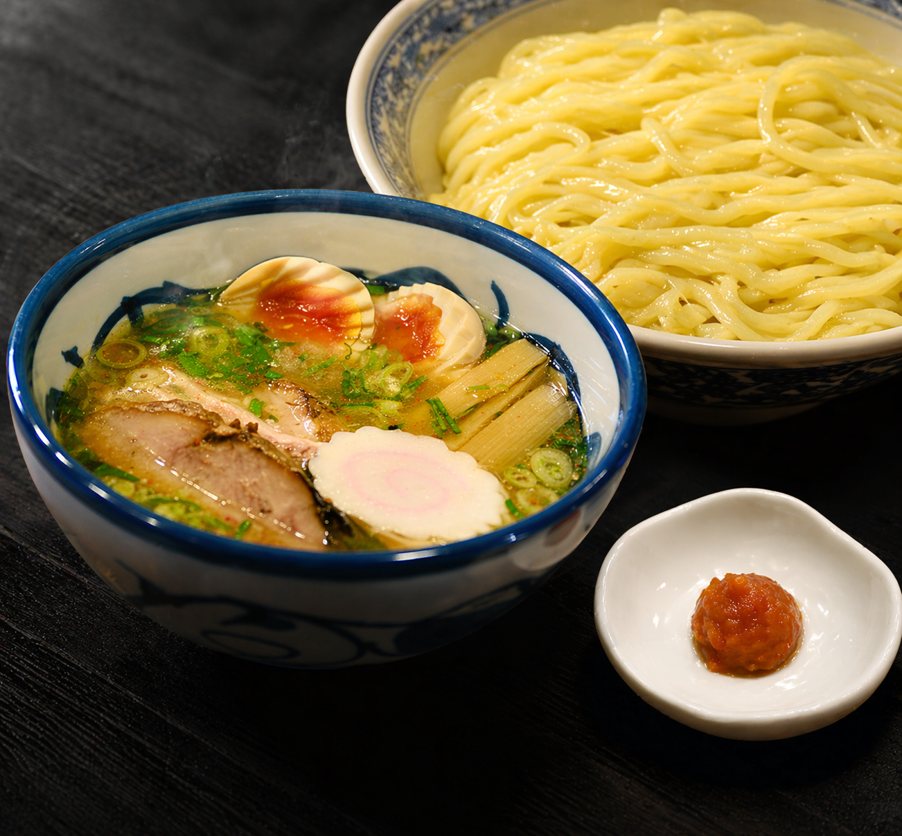
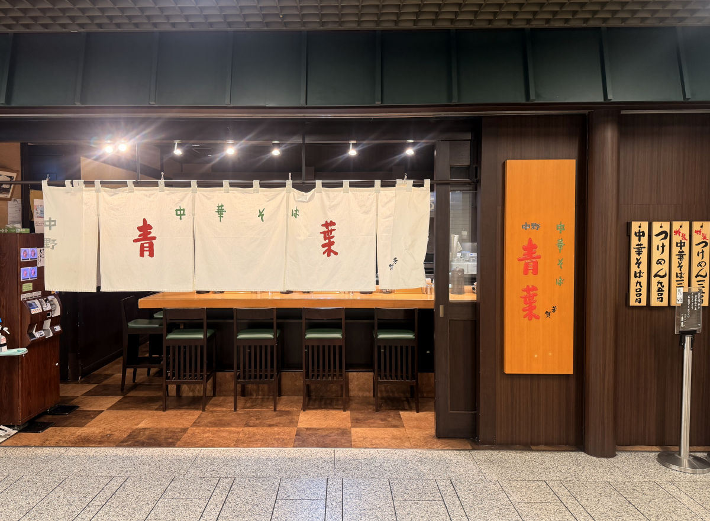
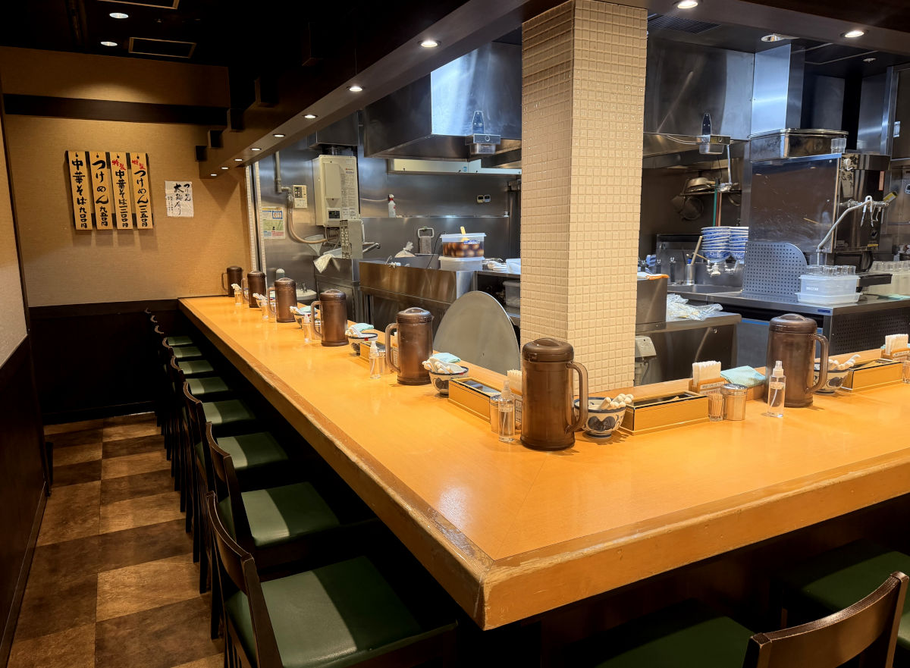
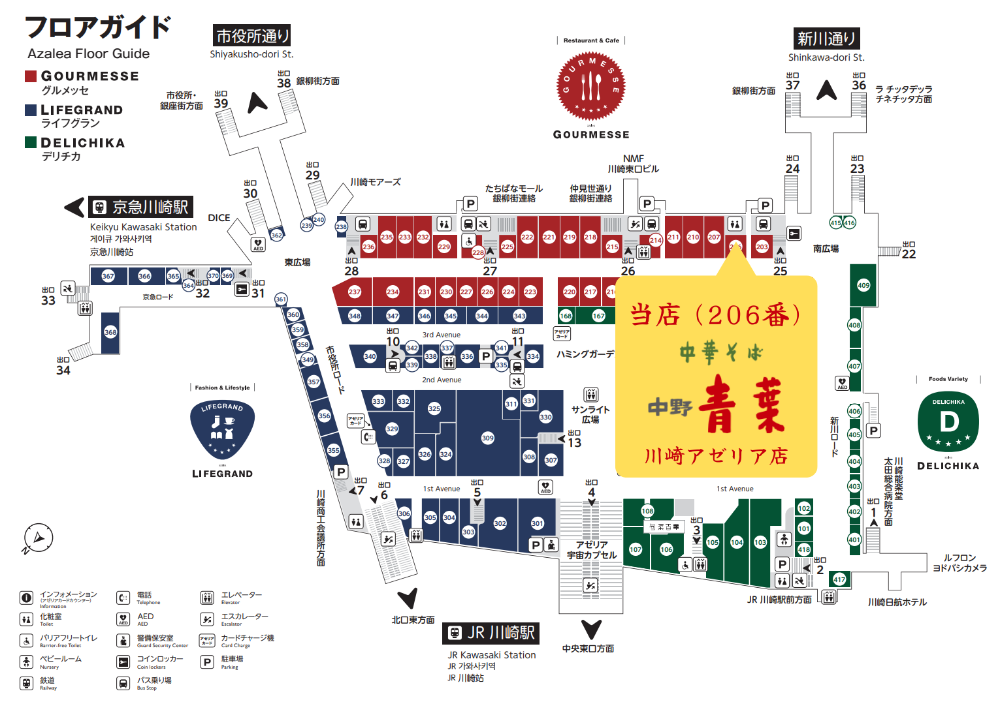

ごあいさつ
「青葉」は、「中華そば本来の味を提供したい」と思い、
1996年に創業しました。
手前味噌ながら、贅沢に材料を使い、深く味の追究に努めました。
又、専門店としてあるべき姿を求めた結果、メニューを絞り込み、
店作りに当たっても、清潔性と開放感を重んじ、今日に至っております。
これからも変わらぬ方針を貫き、
皆様のご期待に応えられるように精進して参ります。
おしながき
風味とコクを両立させた「ダブルスープ」
青葉の中華そばは、「東京ラーメン」と「九州ラーメン」、両方の良さを取り入れたものです。
「東京ラーメン」は「香り高い和風だし」が魅力ですが、スープが淡泊すぎ、私にはもの足りなく思えました。
一方、「九州ラーメン」は「濃厚なコク」がありますが、私にはニオイや脂が強すぎるので苦手でした。
両方の良さを合わせることが出来ないか？そこで考えたのが「ダブルスープ」でした。
これは、「九州ラーメン」のトンコツ、鶏ガラといった「動物系スープ」から脂を分離し「コク」だけ残したスープと、それに負けないような濃い、かつお節、さば節、煮干しといった「魚系の和風スープ」。 この二つを別々に抽出し、丼で合わせたものです。
現在は、より安定した品質を守るため、丼で合わせる形ではありませんが、「ダブルスープ」のスタイルを守っています。

小麦の風味を感じる特製麺
青葉の麺は、「うどん」と「中華麺」の良さを合わせたもので、当店が開発したものを使っています。
特に小麦の風味を活かすため、「作りたて」にこだわっています。
変わらない味
青葉の中華そばは、お子様からお年寄りまで、たくさんの方に食べて頂くよう、吟味を重ねたものです。
とかく流行に流される時代に、「変わらぬ味」「末永く愛される味」を目指し、精進を続けております。
青葉のメニューは、「中華そば」「特製中華そば」「つけめん」「特製つけめん」の4種類だけです。
「チャーシュー麺」も「メンマラーメン」「味玉ラーメン」もありません。
「特製」というのは、チャーシュー、メンマを増量し、味付卵を加えたメニューです。
おこのみ
香りが強い旬の時期にお店で毎年手作りしてる特製のゆず唐辛子です。
最初から入れても途中で味変でも辛味と爽やかな香りが中華そばとつけめんにアクセントを加えます。

店舗情報
【住所】〒210-0007 神奈川県川崎市川崎区駅前本町26-2 川崎アゼリア
【電話番号】044-589-3433
【営業時間】11:00～22:30（L.O.22:15）
【定休日】年中無休



お得な情報
お得な情報はSNSで配信しています！
ぜひお友達登録・フォローをお願いします！